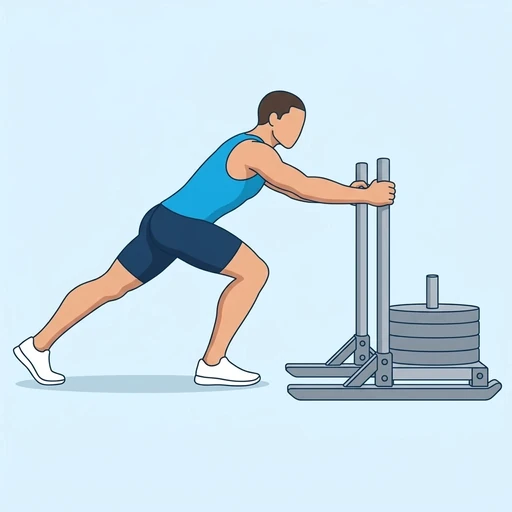

Sled Push
A conditioning and leg-strength exercise: leaning into the uprights of a loaded sled, you drive it across the floor with short, powerful steps. The legs and glutes push the load while the arms and trunk stay braced, and there is no weight on the spine.
Full body · Sled · Intermediate

Muscles worked by the Sled Push
Primary
Secondary
Also called: calf, calves, gastrocnemius, gastroc, glute, glutes.
Equipment
Also called: prowler, push sled, pull sled, weight sled, dog sled.
How to do the Sled Push
- Load the sled and stand behind it, holding the uprights with your hands at about chest height.
- Lean forward so your body forms a straight diagonal line from your head to your back heel, with your arms extended.
- Brace your trunk and drive one knee forward, pushing the floor away with the ball of your back foot.
- Keep taking short, powerful steps, driving each leg back hard to move the sled forward.
- Keep your hips low and your back flat, and look a short distance ahead of the sled.
- Push for the planned distance or time, then stop under control and rest before the next push.
Form tips
- Stay low with your arms locked or slightly bent; standing up tall makes you lose drive and push the sled with your arms.
- Push through the balls of the feet with short, quick steps rather than long strides.
- Pick a load you can keep moving at a steady pace; if the sled stops, the load is too heavy for the set.
At a glance
| Body part | Full body |
|---|---|
| Category | Strength |
| Force type | Push |
| Mechanic | Compound |
| Difficulty | Intermediate |
| Equipment | Sled |
| Goals | Strength, Power, Endurance |
| Tags | Full body, Leg day, Conditioning, No axial load, Knee safe |
| MET | 6.0 (metabolic equivalent, for calorie estimates) |
| Unilateral | No |
| Bodyweight | No |
| Dataset id | sled-push |
Sled Push in German & Spanish
| German | Sled Push |
|---|---|
| Spanish | Empuje de Trineo |
Descriptions, instructions and tips ship in all three languages in the JSON.
Related exercises
Exercise data (JSON)
The record below is exactly what exercises.json ships for this exercise — names, descriptions, instructions and tips in English, German and Spanish.
{
"id": "sled-push",
"name_en": "Sled Push",
"name_de": "Sled Push",
"name_es": "Empuje de Trineo",
"description_en": "A conditioning and leg-strength exercise: leaning into the uprights of a loaded sled, you drive it across the floor with short, powerful steps. The legs and glutes push the load while the arms and trunk stay braced, and there is no weight on the spine.",
"description_de": "Eine Übung für Kondition und Beinkraft: Du lehnst dich in die senkrechten Stangen eines beladenen Schlittens und schiebst ihn mit kurzen, kraftvollen Schritten über den Boden. Beine und Gesäß schieben die Last, während Arme und Rumpf angespannt bleiben, und auf der Wirbelsäule liegt kein Gewicht.",
"description_es": "Un ejercicio de acondicionamiento y fuerza de piernas: inclinado contra las barras verticales de un trineo cargado, lo desplazas por el suelo con pasos cortos y potentes. Las piernas y los glúteos empujan la carga mientras los brazos y el tronco se mantienen firmes, y la columna no soporta peso.",
"category": "strength",
"force_type": "push",
"mechanic": "compound",
"difficulty": "intermediate",
"equipment": "sled",
"body_part": "full_body",
"primary_muscles": [
"gastrocnemius",
"gluteus_maximus",
"quadriceps"
],
"secondary_muscles": [
"hamstrings",
"rectus_abdominis",
"triceps_brachii"
],
"goals": [
"strength",
"power",
"endurance"
],
"tags": [
"full_body",
"leg_day",
"conditioning",
"no_axial_load",
"knee_safe"
],
"is_unilateral": false,
"is_bodyweight": false,
"instructions_en": [
"Load the sled and stand behind it, holding the uprights with your hands at about chest height.",
"Lean forward so your body forms a straight diagonal line from your head to your back heel, with your arms extended.",
"Brace your trunk and drive one knee forward, pushing the floor away with the ball of your back foot.",
"Keep taking short, powerful steps, driving each leg back hard to move the sled forward.",
"Keep your hips low and your back flat, and look a short distance ahead of the sled.",
"Push for the planned distance or time, then stop under control and rest before the next push."
],
"instructions_de": [
"Belade den Schlitten und stelle dich dahinter, die Hände an den Stangen etwa auf Brusthöhe.",
"Lehne dich nach vorn, sodass dein Körper vom Kopf bis zur hinteren Ferse eine gerade Diagonale bildet, die Arme gestreckt.",
"Spanne den Rumpf an und bringe ein Knie nach vorn, während du dich mit dem Ballen des hinteren Fußes vom Boden wegdrückst.",
"Mache weiter kurze, kraftvolle Schritte und drücke jedes Bein kräftig nach hinten, um den Schlitten vorwärts zu bewegen.",
"Halte die Hüfte tief und den Rücken gerade und blicke ein kurzes Stück vor den Schlitten.",
"Schiebe für die geplante Strecke oder Zeit, halte dann kontrolliert an und ruhe dich vor dem nächsten Durchgang aus."
],
"instructions_es": [
"Carga el trineo y colócate detrás, sujetando las barras verticales con las manos aproximadamente a la altura del pecho.",
"Inclínate hacia delante de modo que el cuerpo forme una línea diagonal recta desde la cabeza hasta el talón trasero, con los brazos extendidos.",
"Aprieta el tronco e impulsa una rodilla hacia delante, empujando el suelo con el metatarso del pie trasero.",
"Sigue dando pasos cortos y potentes, empujando con fuerza cada pierna hacia atrás para hacer avanzar el trineo.",
"Mantén las caderas bajas y la espalda plana, y mira a poca distancia por delante del trineo.",
"Empuja durante la distancia o el tiempo previstos; luego detente con control y descansa antes del siguiente empuje."
],
"tips_en": [
"Stay low with your arms locked or slightly bent; standing up tall makes you lose drive and push the sled with your arms.",
"Push through the balls of the feet with short, quick steps rather than long strides.",
"Pick a load you can keep moving at a steady pace; if the sled stops, the load is too heavy for the set."
],
"tips_de": [
"Bleibe tief, die Arme durchgestreckt oder leicht gebeugt; richtest du dich auf, verlierst du den Vortrieb und schiebst den Schlitten mit den Armen.",
"Drücke dich mit kurzen, schnellen Schritten über die Fußballen ab statt mit langen Schritten.",
"Wähle eine Last, die du in gleichmäßigem Tempo in Bewegung halten kannst; bleibt der Schlitten stehen, ist die Last für den Satz zu schwer."
],
"tips_es": [
"Mantente bajo con los brazos bloqueados o ligeramente flexionados; si te yergues, pierdes impulso y acabas empujando el trineo con los brazos.",
"Empuja con los metatarsos dando pasos cortos y rápidos en lugar de zancadas largas.",
"Elige una carga que puedas mantener en movimiento a un ritmo constante; si el trineo se detiene, la carga es demasiado pesada para la serie."
],
"met": 6.0,
"images": {
"flat": {
"main": "images/flat/sled-push-main.webp"
}
}
}Fetch just this exercise
const { exercises } = await fetch(
"https://exercise-dataset.com/exercises.json"
).then(r => r.json());
const ex = exercises.find(e => e.id === "sled-push");Free for personal and commercial in-app use with attribution (“Exercise data by RepDB”) — see the license and ready-made attribution snippets. Redistributing the data as a dataset or API is not permitted.